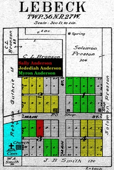
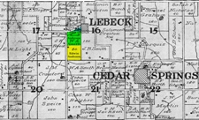

1908 Map of Lebeck Missouri Area

Lebeck Town Plan - 1908
|

Lebeck Area Plat - 1908
|
Lebeck (formerly Clair Spring) was a trading-point 17 miles north, northwest of
Stockton. It was settled in 1868 by Noah Graham. It was named for the Lebeck
family, who were prominent people and friends of Graham. It had a population
of 30 or 40 and contained 1 steam saw mill, 2 stores, a wagon shop, and a public
school building. The nearest railroad station was Schell City, 16 miles distant.
In the spring of 1889, Buckley and Sally moved to the Lebeck area of Cedar County, Missouri.
About the smae time, Buckley's sons Jedediah, Edwin and Myron and their families also
moved from Minnesota to Cedar County, Missouri.
Buckley B. Anderson obtained five Lots in Block 1 and four Lots in Block 3
(see Lebeck Map highlighted lots). He sold the Block 3 Lots in 1890 and the Block
1 Lots in 1892 to his son Myron M. Anderson.
Edwin eventually purchased 40 acres located about a mile south-west of Lebeck in
Section 16 of Township 36 North, Range 27 West of the 5th Prime Meridian.
|